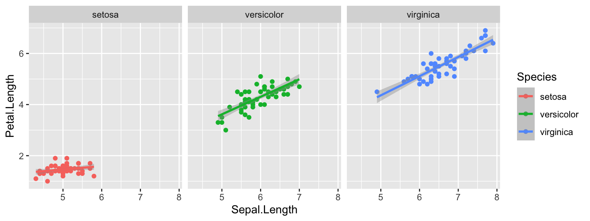

Apply Functions and Loops
Dai Shizuka
updated 11/05/24
In this module, we will go over several useful R tricks that allow you to speed up tasks and scale up your analyses!
Let’s load the packages we’ll need here:
library(tidyverse)
library(cowplot)1. The “apply-family” of functions
The “apply family” function–which includes apply(),
sapply(), lapply() and
tapply()–takes a series of elements and applies a given
function to it. The function to be applied can be defined within the
‘apply’ function.
“apply” functions take X, and applies a function to each element
along the length of X (with the exception of apply(), which
can apply the function along an array, and tapply(): see
below). Each apply-family function varies slightly in its syntax or
output format:
lapply()returns the output as a listsapply()returns the output in the simplest format possible (e.g., it will be a vector if the output is a series of numbers)vapply()allows you to pre-specify a type of return value.apply()is slightly different in that it allows you to apply the function on an array–e.g., you can apply a function on rows of a matrix, or columns, or on each cell.tapply()applies a function to an variable in a dataframe grouped by a factor. (I don’t think I ever really use this one because I prefer to use thegroup_by()%>%summarise()pipeline from dplyr)
1.1 Applying a function to a set of elements using
sapply() and lapply()
1.1.1 The syntax of sapply() and lapply()
functions:
These two functions take the syntax: sapply(“elements to apply the function to”, “function”).
Let’s try out a really simple application of the
sapply() function:
Here, I’m going to define a very simple custom function to take a number and multiply it by 2:
mult.2=function(x) x*2Now, you can apply that new function to a vector of numbers 1 through 5:
sapply(1:5, mult.2)## [1] 2 4 6 8 10You can actually do the same thing without first defining a function. You can instead just create the function WITHIN the sapply function.
So this will do the same thing:
sapply(1:5, function(x) x*2)## [1] 2 4 6 8 10
1.1.2: The basic difference between sapply() and
lapply()
The difference between the sapply() and
lapply() functions is the format of the output.
The
sapply()function takes a series of elements, run a function on it, and then save the output in the simplest format (“s” in “sapply” is for “simplify”).The
lapply()function takes the series of elements, runs a function on it, and then saves the output as a list.
Let’s try the same line of code again:
sapply(1:5, function(x) x*2)## [1] 2 4 6 8 10Because the output is a set of numbers, the sapply()
function returns the simplest format for that–a vector.
Compare that with the lapply() function, which saves the
output as a list.
lapply(1:5, mult.2)## [[1]]
## [1] 2
##
## [[2]]
## [1] 4
##
## [[3]]
## [1] 6
##
## [[4]]
## [1] 8
##
## [[5]]
## [1] 10You can see that lapply() automatically generates the
output as a list.
Here’s another example:
v=c(1,2,3)
sapply(1:5, function(x) x*v)## [,1] [,2] [,3] [,4] [,5]
## [1,] 1 2 3 4 5
## [2,] 2 4 6 8 10
## [3,] 3 6 9 12 15What have we done here?
- Set up an object called
v, which is a vector of three numbers: 1, 2 and 3 - Then, take each element of
1:10and multiply byvar, which itself is 3 numbers. - Organize the results as a matrix, which is the simplest format to store a 2-dimensional set of numbers. In this case, there will be 3 rows of 10 numbers.
Again, compare this result with the output of
lapply():
v=c(1,2,3)
lapply(1:5, function(x) x*v)## [[1]]
## [1] 1 2 3
##
## [[2]]
## [1] 2 4 6
##
## [[3]]
## [1] 3 6 9
##
## [[4]]
## [1] 4 8 12
##
## [[5]]
## [1] 5 10 15
1.1.2. lapply() is really useful when your output is
complex, like a model output of dataframe:
lapply() is really useful when you want to apply a
function whose output is not a neat set of values.
As an example, let’s use the lapply() function to run a
linear regression on a list of dataframes. First, we will create such a
list by “splitting” the familiar iris dataset by species
(output not shown):
iris.list=split(iris, iris$Species)
iris.listNow we have a list object with three dataframes. Let’s now use the
lapply() function to conduct the same linear regression
model Petal.Length~Sepal.Length on each dataset. The output
will be the anova() tables that show the F-statistic and
overall model fits.
spp.mods=lapply(iris.list, function(x) lm(Petal.Length~Sepal.Length, data=x))
spp.mods## $setosa
##
## Call:
## lm(formula = Petal.Length ~ Sepal.Length, data = x)
##
## Coefficients:
## (Intercept) Sepal.Length
## 0.8031 0.1316
##
##
## $versicolor
##
## Call:
## lm(formula = Petal.Length ~ Sepal.Length, data = x)
##
## Coefficients:
## (Intercept) Sepal.Length
## 0.1851 0.6865
##
##
## $virginica
##
## Call:
## lm(formula = Petal.Length ~ Sepal.Length, data = x)
##
## Coefficients:
## (Intercept) Sepal.Length
## 0.6105 0.7501Now, let’s then use the lapply() function again to get
the summary:
spp.mods.summary=lapply(spp.mods, function(x) summary(x))
spp.mods.summary## $setosa
##
## Call:
## lm(formula = Petal.Length ~ Sepal.Length, data = x)
##
## Residuals:
## Min 1Q Median 3Q Max
## -0.40856 -0.08027 -0.00856 0.11708 0.46512
##
## Coefficients:
## Estimate Std. Error t value Pr(>|t|)
## (Intercept) 0.80305 0.34388 2.335 0.0238 *
## Sepal.Length 0.13163 0.06853 1.921 0.0607 .
## ---
## Signif. codes: 0 '***' 0.001 '**' 0.01 '*' 0.05 '.' 0.1 ' ' 1
##
## Residual standard error: 0.1691 on 48 degrees of freedom
## Multiple R-squared: 0.07138, Adjusted R-squared: 0.05204
## F-statistic: 3.69 on 1 and 48 DF, p-value: 0.0607
##
##
## $versicolor
##
## Call:
## lm(formula = Petal.Length ~ Sepal.Length, data = x)
##
## Residuals:
## Min 1Q Median 3Q Max
## -0.68611 -0.22827 -0.04123 0.19458 0.79607
##
## Coefficients:
## Estimate Std. Error t value Pr(>|t|)
## (Intercept) 0.18512 0.51421 0.360 0.72
## Sepal.Length 0.68647 0.08631 7.954 2.59e-10 ***
## ---
## Signif. codes: 0 '***' 0.001 '**' 0.01 '*' 0.05 '.' 0.1 ' ' 1
##
## Residual standard error: 0.3118 on 48 degrees of freedom
## Multiple R-squared: 0.5686, Adjusted R-squared: 0.5596
## F-statistic: 63.26 on 1 and 48 DF, p-value: 2.586e-10
##
##
## $virginica
##
## Call:
## lm(formula = Petal.Length ~ Sepal.Length, data = x)
##
## Residuals:
## Min 1Q Median 3Q Max
## -0.68603 -0.21104 0.06399 0.18901 0.66402
##
## Coefficients:
## Estimate Std. Error t value Pr(>|t|)
## (Intercept) 0.61047 0.41711 1.464 0.15
## Sepal.Length 0.75008 0.06303 11.901 6.3e-16 ***
## ---
## Signif. codes: 0 '***' 0.001 '**' 0.01 '*' 0.05 '.' 0.1 ' ' 1
##
## Residual standard error: 0.2805 on 48 degrees of freedom
## Multiple R-squared: 0.7469, Adjusted R-squared: 0.7416
## F-statistic: 141.6 on 1 and 48 DF, p-value: 6.298e-161.1.3. You can use sapply() to efficiently extract the
coefficients from a series of models stored in a list.
Every model output and/or summary objects contain lots of
information. Let’s see what is in the model summary for “setosa” (the
first element of the spp.mods.summary list) using the function
str():
str(spp.mods.summary[[1]])## List of 11
## $ call : language lm(formula = Petal.Length ~ Sepal.Length, data = x)
## $ terms :Classes 'terms', 'formula' language Petal.Length ~ Sepal.Length
## .. ..- attr(*, "variables")= language list(Petal.Length, Sepal.Length)
## .. ..- attr(*, "factors")= int [1:2, 1] 0 1
## .. .. ..- attr(*, "dimnames")=List of 2
## .. .. .. ..$ : chr [1:2] "Petal.Length" "Sepal.Length"
## .. .. .. ..$ : chr "Sepal.Length"
## .. ..- attr(*, "term.labels")= chr "Sepal.Length"
## .. ..- attr(*, "order")= int 1
## .. ..- attr(*, "intercept")= int 1
## .. ..- attr(*, "response")= int 1
## .. ..- attr(*, ".Environment")=<environment: 0x13af87398>
## .. ..- attr(*, "predvars")= language list(Petal.Length, Sepal.Length)
## .. ..- attr(*, "dataClasses")= Named chr [1:2] "numeric" "numeric"
## .. .. ..- attr(*, "names")= chr [1:2] "Petal.Length" "Sepal.Length"
## $ residuals : Named num [1:50] -0.0744 -0.048 -0.1217 0.0914 -0.0612 ...
## ..- attr(*, "names")= chr [1:50] "1" "2" "3" "4" ...
## $ coefficients : num [1:2, 1:4] 0.8031 0.1316 0.3439 0.0685 2.3353 ...
## ..- attr(*, "dimnames")=List of 2
## .. ..$ : chr [1:2] "(Intercept)" "Sepal.Length"
## .. ..$ : chr [1:4] "Estimate" "Std. Error" "t value" "Pr(>|t|)"
## $ aliased : Named logi [1:2] FALSE FALSE
## ..- attr(*, "names")= chr [1:2] "(Intercept)" "Sepal.Length"
## $ sigma : num 0.169
## $ df : int [1:3] 2 48 2
## $ r.squared : num 0.0714
## $ adj.r.squared: num 0.052
## $ fstatistic : Named num [1:3] 3.69 1 48
## ..- attr(*, "names")= chr [1:3] "value" "numdf" "dendf"
## $ cov.unscaled : num [1:2, 1:2] 4.136 -0.822 -0.822 0.164
## ..- attr(*, "dimnames")=List of 2
## .. ..$ : chr [1:2] "(Intercept)" "Sepal.Length"
## .. ..$ : chr [1:2] "(Intercept)" "Sepal.Length"
## - attr(*, "class")= chr "summary.lm"You can see there are lots of info in here. Let’s extract the “estimate” of the –i.e., the slope of the relationship. This value is stored inside the “coefficients” section of the summary. If you look at the output above, you can kind of see that the coefficients are arranged in a matrix of 2 rows (intercept and Sepal.Length) and 4 columns (Estimate, Std. Error, t-value, and p-value). So, the slope of the relationship between Sepal Length and Petal Length is in the 2nd row, 1st column.
Use this knowledge and an sapply() function to get those
slopes!
sapply(spp.mods.summary, function(x) x$coefficients[2,1])## setosa versicolor virginica
## 0.1316317 0.6864698 0.7500808You can see that the three species vary in their relationships
between sepal length and petal length. Here’s one way to visualize it
simply using ggplot. Here, I’m using just the original iris data set to
do this, but I’ve added the facet_wrap() function to show
the results for each species separately:
ggplot(iris, aes(x=Sepal.Length, y=Petal.Length, color=Species)) +
geom_point() +
geom_smooth(method="lm") +
facet_wrap(~Species) You can see how the slopes of “versicolor” and “virginica” are steeper than for “setosa”.
1.2 tapply() (and comparing it to
aggregate() and dplyr)
The tapply() function applies a function to a set of
values that are grouped by some factor. This is pretty much the same as
the aggregate() function, but the output format is
different. As a demo, let’s first set up a dataframe:
fac=c(rep("A", 4), rep("B", 4), rep("C", 4))
num=1:12
dat=data.frame(num, fac)
dat## num fac
## 1 1 A
## 2 2 A
## 3 3 A
## 4 4 A
## 5 5 B
## 6 6 B
## 7 7 B
## 8 8 B
## 9 9 C
## 10 10 C
## 11 11 C
## 12 12 CNow, we’ll sum the values associated each factor (A, B or C). We’ll
do this using tapply(), aggregate(), and the
dplyr pipeline group_by() %>% summarise() and compare
the outputs:
output_tapply=tapply(dat$num, list(dat$fac), sum)
output_aggregate=aggregate(num, list(fac=fac), sum)
output_dplyr=dat %>% group_by(fac) %>% summarise(sum(num))Let’s see what tapply() did:
output_tapply## A B C
## 10 26 42class(output_tapply)## [1] "array"You can see that tapply() returns an array (in this
case, since it’s a one-dimensional array, it is basically a vector) with
the names of the elements as the factor you used to group the
values.
How about what aggregate() did?:
output_aggregate## fac x
## 1 A 10
## 2 B 26
## 3 C 42class(output_aggregate)## [1] "data.frame"As you can see, aggregate() returns a dataframe with the
factor as one column and values as a second column.
Finally, let’s what the dplyr pipeline of
group_by() %>% summarise() did:
output_dplyr## # A tibble: 3 × 2
## fac `sum(num)`
## <chr> <int>
## 1 A 10
## 2 B 26
## 3 C 42This is essentially the same as aggregate() but in a
tibble format.
1.3 Working with arrays using apply()
The apply() function is useful when you want to apply a
function on an array (i.e., an n-dimensional set of numbers). Here, the
syntax is apply(X, MARGIN, FUN, …), where X is a matrix or array, MARGIN
is the direction in which the function will applied—for a matrix,
MARGIN=1 indicates rows, and MARGIN=2
indicates columns. For example:
m=matrix(1:20, nrow=5, byrow=TRUE)
m## [,1] [,2] [,3] [,4]
## [1,] 1 2 3 4
## [2,] 5 6 7 8
## [3,] 9 10 11 12
## [4,] 13 14 15 16
## [5,] 17 18 19 20apply(m,1,sum) #sum the rows## [1] 10 26 42 58 74apply(m,2,sum) #sum the columns## [1] 45 50 55 60Or you can set the margin to c(1,2) to apply a function
to row/column combinations (i.e., each cell)
apply(m,c(1,2),function(x) x^2)## [,1] [,2] [,3] [,4]
## [1,] 1 4 9 16
## [2,] 25 36 49 64
## [3,] 81 100 121 144
## [4,] 169 196 225 256
## [5,] 289 324 361 400Where apply() really shines is when working with
larger-dimensional arrays. For example, consider a 3x4x5 3-D array.
 We can sum across
each of those dimensions:
We can sum across
each of those dimensions:
a=array(1:60, dim=c(5, 4, 3)) This creates a 3-dimensional array that is 5 values high, 4 values wide, and 3 values deep.
The first “layer” of this matrix along dimension 1 (i.e., the matrix you can see on the front face of the diagram) would be:
a[,,1]## [,1] [,2] [,3] [,4]
## [1,] 1 6 11 16
## [2,] 2 7 12 17
## [3,] 3 8 13 18
## [4,] 4 9 14 19
## [5,] 5 10 15 20The second “layer” would be:
a[,,2]## [,1] [,2] [,3] [,4]
## [1,] 21 26 31 36
## [2,] 22 27 32 37
## [3,] 23 28 33 38
## [4,] 24 29 34 39
## [5,] 25 30 35 40etc…
Now, let’s try out the apply() function along each
dimension. First, let’s calculate the sum across the “depth” dimension…
This should return three values:
apply(a, 3, sum)## [1] 210 610 1010This corresponds to the sums of each matrix if we sliced the matrices like I’m showing on the diagram above:
sum(a[,,1])## [1] 210sum(a[,,2])## [1] 610sum(a[,,3])## [1] 1010If we want to sum the matrices as we cut the array along the “height” dimension (i.e., along rows), we should get 5 values:
apply(a, 1, sum)## [1] 342 354 366 378 390If we sum the matrices as we cut the array along the “width” dimension (i.e., along columns), we should get 4 values:
apply(a, 2, sum)## [1] 345 420 495 570We can also sum the array along two dimensions. Let’s say we want to “collapse” the array into the 5-row x 4-column matrix–i.e., we sum each corresponding cell of the three “layers” of the matrices in the figure above:
apply(a, c(1,2), sum)## [,1] [,2] [,3] [,4]
## [1,] 63 78 93 108
## [2,] 66 81 96 111
## [3,] 69 84 99 114
## [4,] 72 87 102 117
## [5,] 75 90 105 1202. For-Loops
A “for loop” is another way to repeat a function or series of functions many times. The idea here is to request that an index (e.g., i) take on a series of values, and that a lines of commands are executed as many times as there are different values of i.
2.1. Set up an empty object (e.g., vector or list) to store the values in:
Here’s a simple example for just repeating a command 5 times:
for (i in 1:5) print(i*2)## [1] 2
## [1] 4
## [1] 6
## [1] 8
## [1] 10Sometimes, it is useful to store the results of a loop to an object. Here, let’s repeat the above command, but we will save the result as a vector. To do this, we will have to first create an empty vector and then request that the output of the command is stored in order. Here, I recommend that you first establish the number of iterations you want to run the command. You’ll see what you mean here:
times=5
v=numeric(length=times)
for (i in 1:times) v[i]=i*2
v## [1] 2 4 6 8 10
2.2. If the output of each loop is a vector, then you have to store the output in a matrix of the appropriate size:
Let’s say you want to multiply a vector of numbers 1 through 10 by a series of numbers 1 through 5. Then, your output needs to be a matrix that is 5 x 10. Here, I’ll set up an empty matrix with 5 rows and 10 columns to save the output:
times=5
m=matrix(nrow=times, ncol=10)
for (i in 1:times) m[i,]=(1:10)*i
m## [,1] [,2] [,3] [,4] [,5] [,6] [,7] [,8] [,9] [,10]
## [1,] 1 2 3 4 5 6 7 8 9 10
## [2,] 2 4 6 8 10 12 14 16 18 20
## [3,] 3 6 9 12 15 18 21 24 27 30
## [4,] 4 8 12 16 20 24 28 32 36 40
## [5,] 5 10 15 20 25 30 35 40 45 50
2.3. You can use loops with output as a list to run a series of complex tasks:
Let’s take the same example as we used in the lapply()
example (Section 1.1 above). We’ll split the iris dataset by species,
then run a series of linear regressions with Sepal Length as the
predictor variable and Petal Length as the response variable:
Let’s just do the split() function again to make sure we
have the same setup:
iris.list=split(iris, iris$Species)
iris.listNow, use loops to run the analyses. Here, I’m going to save the
output as a list. To set up an empty list, all I have to do is
list():
spp.mods.loop=list()
for(i in 1:length(iris.list)){
spp.mods.loop[[i]]=lm(Petal.Length~Sepal.Length, data=iris.list[[i]])
}
spp.mods.loop## [[1]]
##
## Call:
## lm(formula = Petal.Length ~ Sepal.Length, data = iris.list[[i]])
##
## Coefficients:
## (Intercept) Sepal.Length
## 0.8031 0.1316
##
##
## [[2]]
##
## Call:
## lm(formula = Petal.Length ~ Sepal.Length, data = iris.list[[i]])
##
## Coefficients:
## (Intercept) Sepal.Length
## 0.1851 0.6865
##
##
## [[3]]
##
## Call:
## lm(formula = Petal.Length ~ Sepal.Length, data = iris.list[[i]])
##
## Coefficients:
## (Intercept) Sepal.Length
## 0.6105 0.7501We can generate the model summaries and extract the slopes in the same loop if we want:
spp.mods.summary.loop=list()
slopes.loop=vector(length=length(iris.list))
for(i in 1:length(iris.list)){
spp.mods.summary.loop[[i]]=summary(spp.mods.loop[[i]])
slopes.loop[i] = spp.mods.summary.loop[[i]]$coefficients[2,1]
}Here are the model summaries:
spp.mods.summary.loop## [[1]]
##
## Call:
## lm(formula = Petal.Length ~ Sepal.Length, data = iris.list[[i]])
##
## Residuals:
## Min 1Q Median 3Q Max
## -0.40856 -0.08027 -0.00856 0.11708 0.46512
##
## Coefficients:
## Estimate Std. Error t value Pr(>|t|)
## (Intercept) 0.80305 0.34388 2.335 0.0238 *
## Sepal.Length 0.13163 0.06853 1.921 0.0607 .
## ---
## Signif. codes: 0 '***' 0.001 '**' 0.01 '*' 0.05 '.' 0.1 ' ' 1
##
## Residual standard error: 0.1691 on 48 degrees of freedom
## Multiple R-squared: 0.07138, Adjusted R-squared: 0.05204
## F-statistic: 3.69 on 1 and 48 DF, p-value: 0.0607
##
##
## [[2]]
##
## Call:
## lm(formula = Petal.Length ~ Sepal.Length, data = iris.list[[i]])
##
## Residuals:
## Min 1Q Median 3Q Max
## -0.68611 -0.22827 -0.04123 0.19458 0.79607
##
## Coefficients:
## Estimate Std. Error t value Pr(>|t|)
## (Intercept) 0.18512 0.51421 0.360 0.72
## Sepal.Length 0.68647 0.08631 7.954 2.59e-10 ***
## ---
## Signif. codes: 0 '***' 0.001 '**' 0.01 '*' 0.05 '.' 0.1 ' ' 1
##
## Residual standard error: 0.3118 on 48 degrees of freedom
## Multiple R-squared: 0.5686, Adjusted R-squared: 0.5596
## F-statistic: 63.26 on 1 and 48 DF, p-value: 2.586e-10
##
##
## [[3]]
##
## Call:
## lm(formula = Petal.Length ~ Sepal.Length, data = iris.list[[i]])
##
## Residuals:
## Min 1Q Median 3Q Max
## -0.68603 -0.21104 0.06399 0.18901 0.66402
##
## Coefficients:
## Estimate Std. Error t value Pr(>|t|)
## (Intercept) 0.61047 0.41711 1.464 0.15
## Sepal.Length 0.75008 0.06303 11.901 6.3e-16 ***
## ---
## Signif. codes: 0 '***' 0.001 '**' 0.01 '*' 0.05 '.' 0.1 ' ' 1
##
## Residual standard error: 0.2805 on 48 degrees of freedom
## Multiple R-squared: 0.7469, Adjusted R-squared: 0.7416
## F-statistic: 141.6 on 1 and 48 DF, p-value: 6.298e-16Here are the slopes:
slopes.loop## [1] 0.1316317 0.6864698 0.7500808